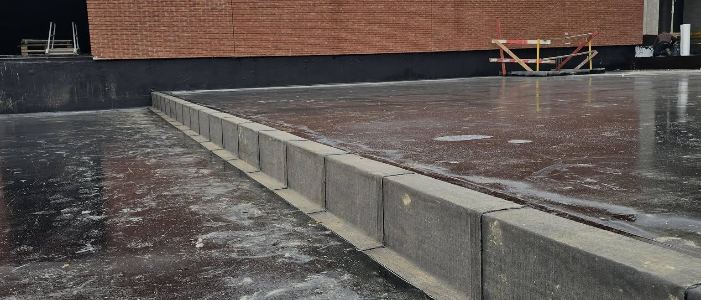

Łaty i doszczelnienia
Wycięcie uszkodzonego fragmentu, osuszenie podłoża i wklejenie nowej warstwy z zakładem. Przy membranie łatę zgrzewamy, przy papie wtapiamy palnikiem.

Woda potrafi wejść w pokrycie kilkanaście metrów od miejsca, w którym kapie na sufit. Bez ustalenia drogi przecieku łatanie na chybił trafił kosztuje dwa razy.
Naprawa miejscowa jest dobrym rozwiązaniem, dopóki uszkodzenie jest pojedyncze, a reszta pokrycia trzyma się podłoża i zachowała elastyczność. Wtedy jedna łata potrafi dać spokój na kilka sezonów.
Inaczej wygląda sprawa, gdy papa kruszy się pod ręką, posypka zeszła na całej powierzchni, a na połaci widać kilkanaście wcześniejszych napraw. Każda kolejna łata trzyma się wtedy coraz krócej, a ocieplenie pod spodem zbiera wodę. Mówimy o tym wprost podczas oględzin, zamiast sprzedawać naprawę, która nie ma szansy się obronić.

Kolejność jest zawsze podobna, bo najczęstsze przyczyny da się wykluczyć szybko i bez rozbierania połaci.
Pytamy, kiedy pojawia się woda: przy ulewie, po roztopach, czy dopiero po kilku dniach deszczu. To zawęża listę podejrzanych.
Sprawdzamy wpusty, przebicia, styki z attyką i miejsca, w których pokrycie było wcześniej naprawiane.
Odkrywką oceniamy, czy woda stoi w ociepleniu i jak daleko zdążyła się rozejść pod pokryciem.
Mówimy wprost, czy wystarczy naprawa miejscowa, czy pokrycie nadaje się już tylko do wymiany.
Wycięcie uszkodzonego fragmentu, osuszenie podłoża i wklejenie nowej warstwy z zakładem. Przy membranie łatę zgrzewamy, przy papie wtapiamy palnikiem.
Wymiana kołnierza wpustu, nowa obróbka przy rurze wentylacyjnej, przeklejenie styku pokrycia z murkiem i montaż listwy dociskowej.
Tam, gdzie arkusza nie da się poprowadzić, nakładamy powłokę PU albo PMMA zbrojoną welonem. Obejmuje kształt bez łączeń i wiąże w kilka godzin.
Gdy łat jest już kilkanaście, kładziemy nową warstwę na całą powierzchnię. Stare pokrycie zostaje jako podkład, o ile ocieplenie pod nim jest suche.
Kilka rzeczy, które ograniczają szkody i skracają nam potem szukanie przyczyny.
Zdjęcie zacieku z datą pokazuje, jak plama rośnie. To realna wskazówka przy ustalaniu, czy woda idzie z jednego miejsca, czy z kilku.
Jeśli masz bezpieczne wyjście na dach, zajrzyj do wpustu. Liście i szlam w koszu to najczęstsza i najtańsza przyczyna kłopotu.
Masa naniesiona na mokre pokrycie zwykle odchodzi po zimie, a przy okazji zakrywa ślad, którym dałoby się znaleźć wejście wody.
Zadzwoń, opisz objaw i kiedy się pojawia. Przy dachach płaskich sam opis często wskazuje, gdzie zacząć szukać.